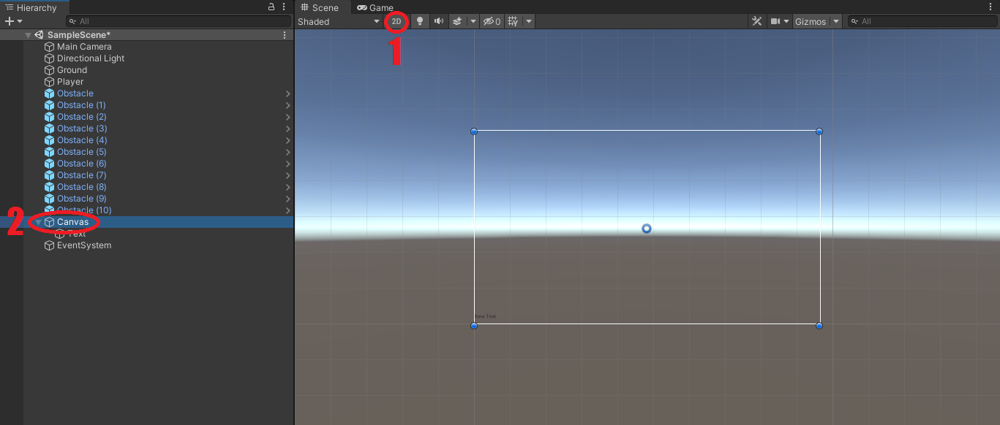

Начнём наш урок с добавления небольшого пользовательского интерфейса. Создание интерфейса в Unity выглядит точно так же, как и создание других объектов: Переходим в Иерархию, нажимаем пкм и создаём Текст (UI->Text)
Если перейти в окно Game, то в левом нижнем углу должна появиться надпись New Text. Из этой надписи нам предстоит сделать счётчик очков игрока. Для этого в окне Сцены нам нужно переключиться в 2D-режим и дважды нажать лкм на объект Canvas в Иерархии

Чтобы регулировать положение твоего текста на экране нужно перенести окно игры (Game) в отдельное окно. Затем наш текст необходимо перенести чуть выше центра, как показано ниже и изменить различные параметры такие как цвет, размер, выравнивание и другие
Для того, чтобы наш текст был масштабируемым в параметрах объекта Canvas изменяем компоненты UI Scale Mode и Match
На данный момент наш интерфейс почти готов. Единственная проблема заключается в том, что наш счётчик не изменяется и не показывает наши очки. Но это довольно просто исправить. Конечно же нам нужно добавить новый скрипт, который мы назовём Score и написать в нём следующее
Этот скрипт должен находиться в объекте Text, а в его компоненты Player и Score Text нужно перетащить объекты Player и Text из Иерархии соответственно
Наш счётчик очков пользователя готов, нажимай "Ctrl"+"S" и переходи к заключительному уроку